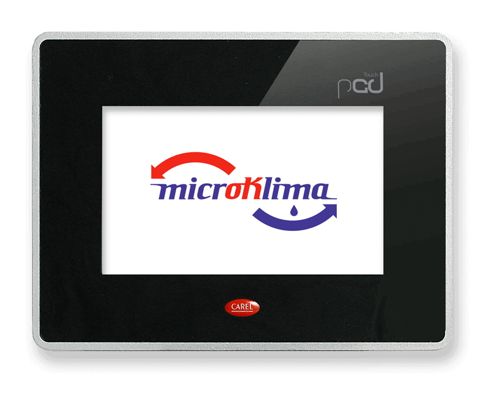

Navegación intuitiva a través de botones gráficos que se presionan con los dedos

Recintos de Alta Densidad de Generación de calor
- Acondicionadores en el rango MM (35 – 50 - 65 % h)
- Su designación se da referida a la capacidad en enfriamiento
- Tres modelos DX simples (5 - 7.5 – 10)
- Tres modelos DX dial (10 – 15 – 20)
Recintos con Baja Densidad de Generación de calor
- Acondicionadores en el rango HH (65 – 80 - 95 % h)
- Acondicionadores en el rango HM (50 – 65 - 80 % h)
- Su designación se da referida al volumen del cuarto de acondicionar
- Un modelo HH (25)
- Tres modelos HM (50 – 100 – 200)
Interfaz de usuario pGDTouch
Fácil modificación de parámetros numéricos. Código de colores para una lectura sencilla de los campos modificables